Akitakata, Hiroshima: things to do, food and stays
Akitakata · Hiroshima
Akitakata
Highlighted on the Hiroshima map.
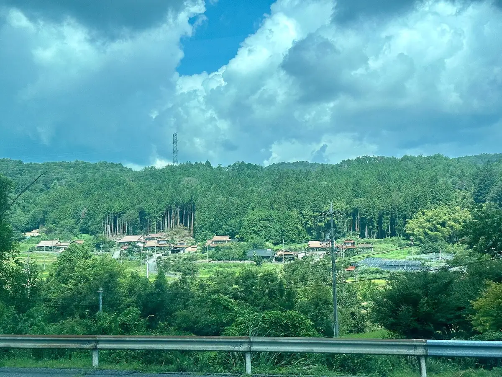
Stay
里山Hanare
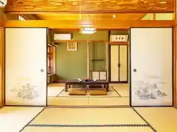
Satoyama Hanare
Inn in Yoshida, Akitakata with a quiet countryside setting.
豪農の家 安芸高田
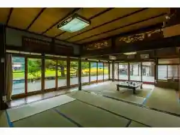
Gono No Ie Akitakata
Inn in Yoshida, Akitakata with a quiet countryside setting.
たかみや湯の森福寿荘
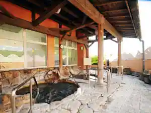
Takamiya Yu No Morifuku Kotobukiso
Inn at Tennenrajiumu Onsen in Takamiya, Akitakata.
神楽門前湯治村
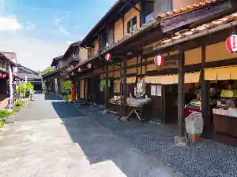
Kagura Monzen Toji Mura
Dining
お好み焼き88
O Konomi Yaki 88
八千代きりちゃんラーメン
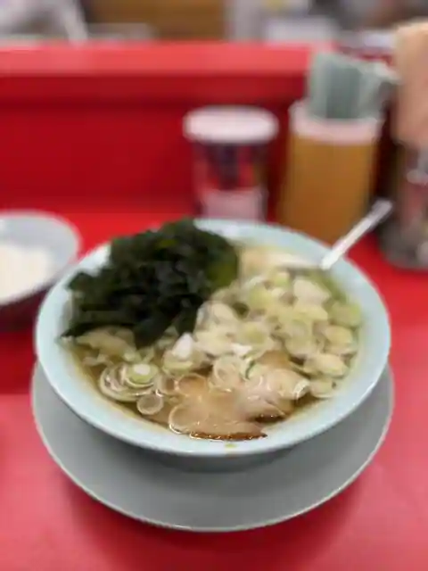
Yachiyo Kirichan Ramen
安芸高田 らーめん ごうき
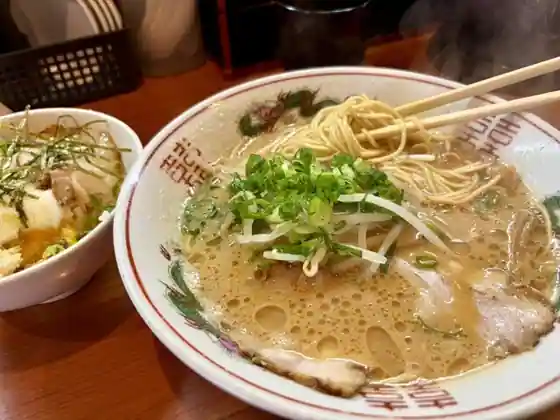
Akitakata Ramen Goki
ながいきラーメン食堂
Nagaiki Ramen Shokudo
うどん・そば 権兵衛
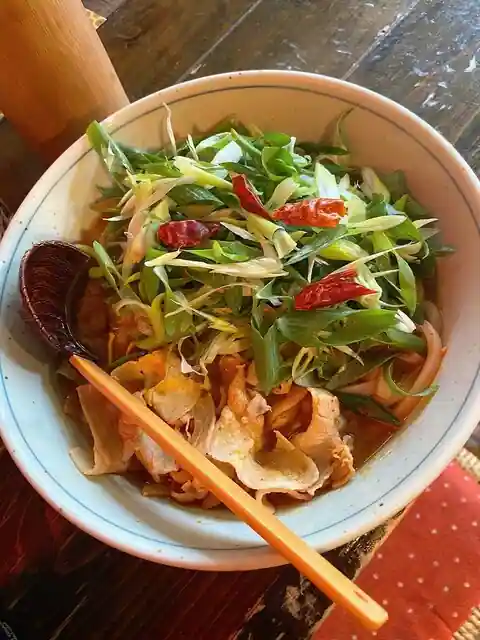
Udon Soba Gonbe
きらく
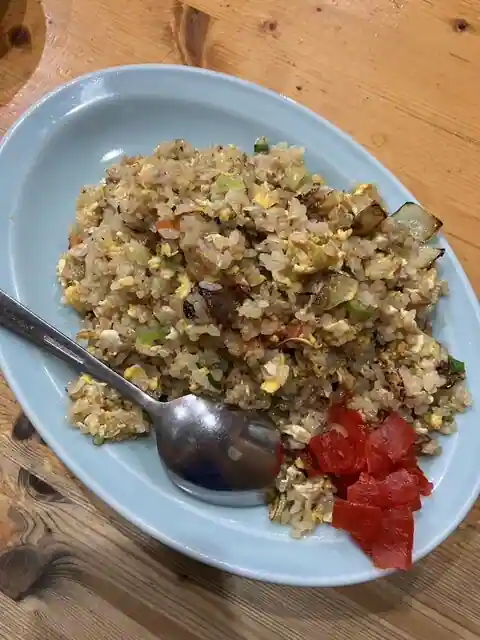
Kiraku
八千代産直市場
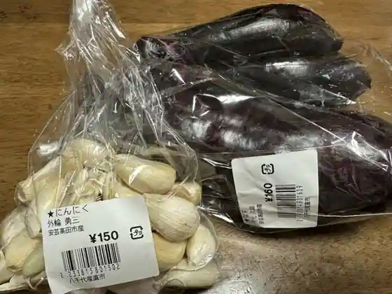
Yachiyo Sanchoku Shijo
三矢の里 あきたかた
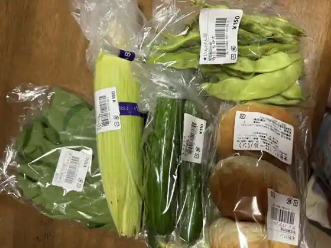
Mitsuya No Sato Akitakata
天然ラドン温泉とお宿とお食事 神楽門前湯治村
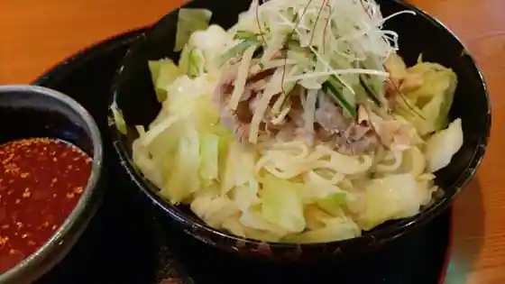
Tennen Radon Onsen To Yadoto O Shokuji Kagura Monzen Toji Mura
縄文アイス
Jomon Aisu
ジョイフル
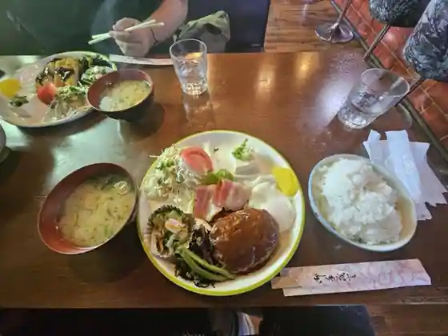
Joifuru
本郷パーキングエリア（下り線）スナックコーナー
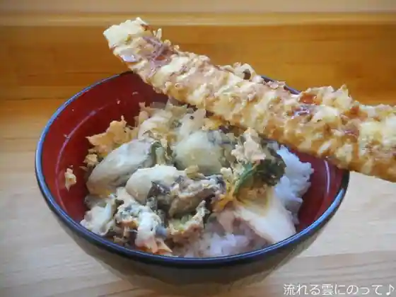
Hongo Pakingueria (Kudari Sen) Sunakkukona
ROUTE54 BAKERY
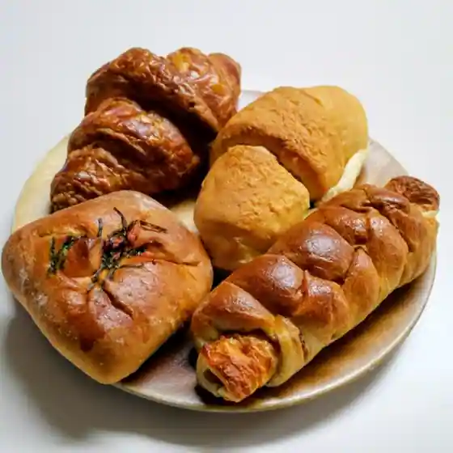
ROUTE54 BAKERY
ファーマーズ・レストラン安芸高田
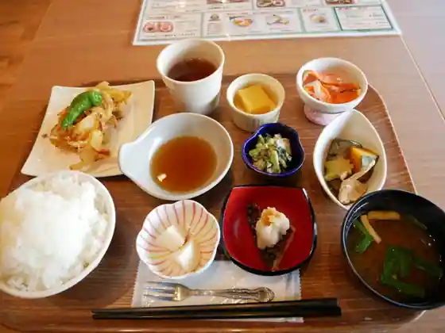
Famazu Restaurant Akitakata
ラーメン長洲
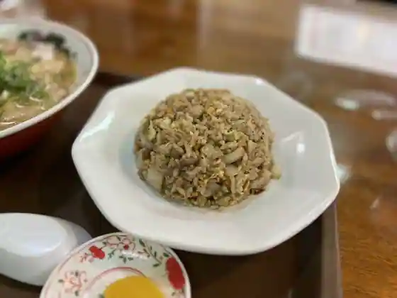
Ramen Choshu
一心
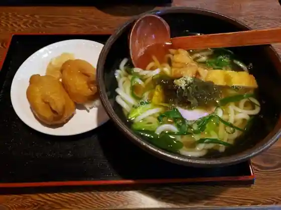
Isshin
okadasasa
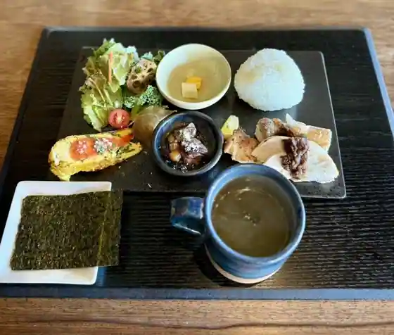
okadasasa
松や・里のあじ
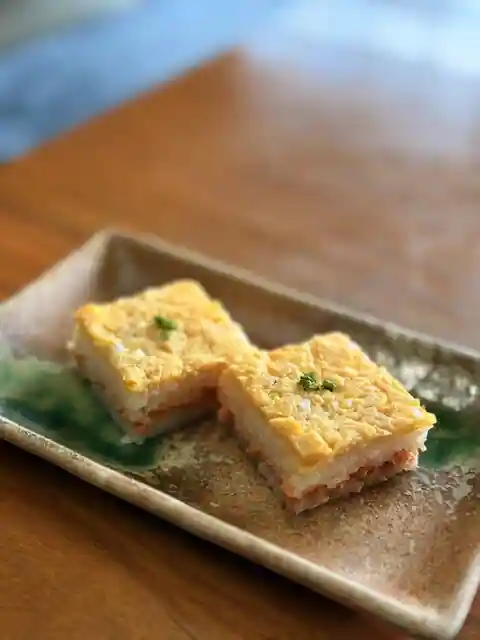
Matsu Ya Sato Noaji
お食事と喫茶 KADO
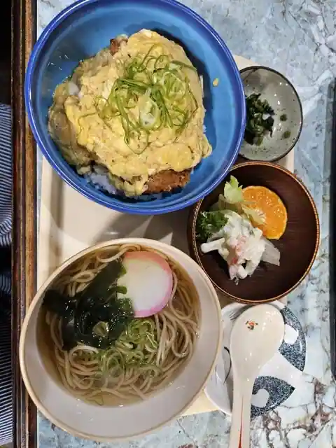
O Shokuji To Kissa KADO
舞
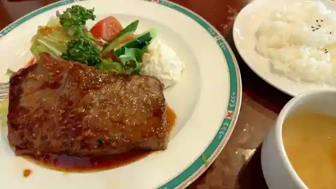
Mai
焼肉一心
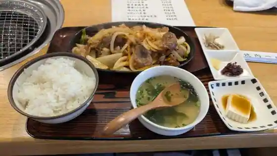
Yakiniku Isshin
道の駅 北の関宿 安芸高田
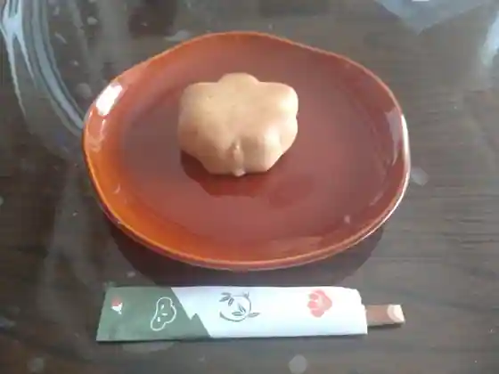
Michi No Eki Kita No Sekiyado Akitakata
鮪専門 かざぐるま
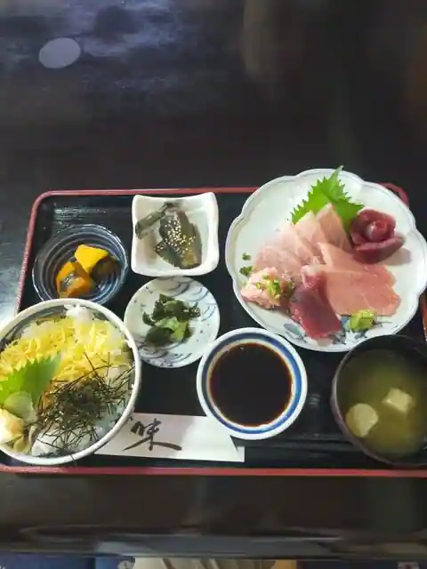
Maguro Senmon Kazaguruma
珍豚香 八千代店
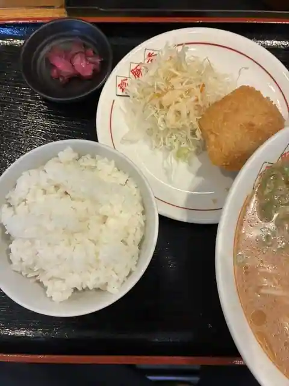
Chin Buta Kaori Yachiyo
Sights
Kagura Monzen Toji Village (Kanko)
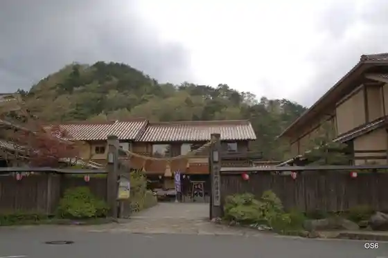
Yoshida Koriyama Castle Ruins
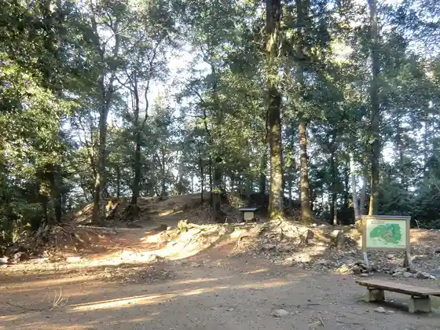
Mitsuya no Kun Hi
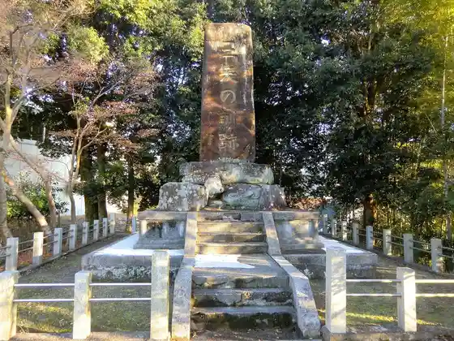
Mori Motonari Hakasho
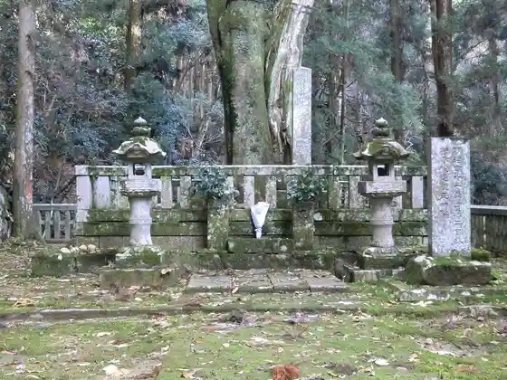
Hyakuman Isshin no Hi